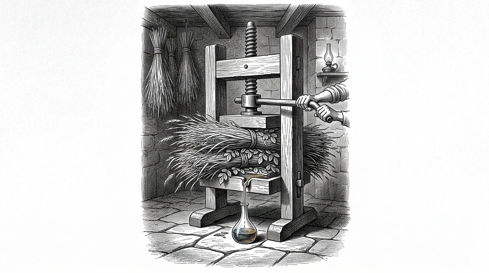
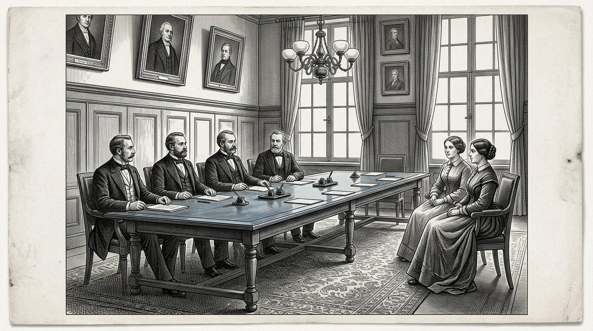

BOOK FOUR
The Kosaris
The Book of the Hydrolysate

BOOK FOUR
The Book of the Hydrolysate
The Liquid No One Had Seen
Prologue — spoken by Kosus
I am Kosus. When you open this book, I will no longer be among you. I gave it to Alkion to keep until the time was ripe, and Anthea put it down on paper together with her.
In Book One I gave you the four pillars and showed you the five ships. I told you about the sun at the equator and the princess who awakens. This fourth book concerns one thing that ran between the lines in the other books but was never written out: the liquid that comes from the grass when you cold-press it.
We call it hydrolysate. It is not one thing but many things at once. It is fuel for your stove when the gas rivers freeze shut. It is a binder for the roads you lay beneath the feet of your children. It is raw material for plastic that lasts a hundred years instead of five.
It is one answer to three questions that until now you answered with three different input lines. Whoever answers three questions with one answer does not become poorer but less dependent. Whoever is dependent has decisions made for them. Whoever is less dependent decides for himself. That is not technology. That is sovereignty.
In Book One I let Alkion hear the storm. I let Petros arrive at the quay. I showed you the sun at the equator and the ship that sails on its own fuel. This fourth book is the leaflet accompanying those stories. Whoever reads it knows not only that the sun works. He also knows how.
And he knows, more importantly, why it does not work without reciprocity. Timaris’s scales weigh heavily here. A liquid from the grass of another land is not oil that you buy. It is a handshake in glass.
Kosus says:what you buy three times from three different masters, you can also build once with a single neighbour. The first way makes you dependent. The second way makes you family.
By Jacobus van Merksteijn
This is Book Four of the Kosaris. It follows Book One, in which the four pillars were laid and the twelve parts traversed the world from the forgotten harbour to the choice placed before the reader. It stands alongside Book Two, which concerned Diakrisis — the distinction between what is certain and what has been assumed. And alongside Book Three, in which Anthea showed how a child is prepared for independent judgment.
This fourth book is about climate, but not as the newspapers write about it. It is about a single substance that comes from a single grass and solves three problems at once: the energy that keeps your house warm, the road along which your children walk to school, and the plastic in which their books are wrapped. When one substance solves three problems at once, more than technology changes. Who decides changes.
The characters are not new. You know Alkion from Part VI of Book One, where she heard the storm no one else heard. You know Petros from Part VIII, where he arrived at the quay of Malta beside the old Knight. Demira stands at her oven as always. Anthea is now grown, and she is the one who passes this book from hand to hand.
I name one thing plainly that the newspapers would rather avoid. We call the liquid hydrolysate. It comes from giant grass called Juncao and from a tree called Moringa. It is made by cold pressing, not by heating and not by fermenting. It comes from the earth without breaking the earth. And it comes from the sun at the equator, where it is and where it remains.
Whoever reads this book and has a minister read it will not change the minister. Whoever reads it to his neighbour may perhaps change the village. As always with these books: power lies in passing it on, not in convincing those who wish to remain deaf.
Malta, November 2026.
Part I

In which Alkion returns to the harbour, Demira teaches her what comes from the giant grass, and the first bottle of hydrolysate is pressed.

Alkion had turned twenty-six. She had worked for six summers in the south, on the plantations of Juncao, and had come home in winter because Kosus had written to say he wanted to show her something. She no longer found him at the quay when she arrived. He had died three weeks earlier, and Demira had been unable to let her know because the letter had been sent too late.
On the first morning after her arrival, she sat on the bench beside the bakery and looked towards the harbour. Demira came outside with a cup of warm milk and said: he left something for you. It is at the back of the bakery.
Alkion followed her inside. In the back room stood a wooden chest, and on the chest lay a letter. The letter was in Kosus’ handwriting. It said: Alkion, you have spent six years in the south learning what the grass can do. Now it is time to learn what the grass is. Open this chest when you are in a calm frame of mind.
Alkion opened the chest. Inside lay a wooden screw press, small but heavy, of the kind once used for grapes. And a glass bottle, empty. And a notebook with a leather cover. On the first page, in Kosus’ handwriting, stood: the hydrolysate.
Alkion read the pages. She read slowly, because Kosus wrote as he spoke, and she heard his voice again. He had written down how to cold-press the grass without the heat that breaks its sweetness. He had written down which plants to place among it so that the grass would nourish itself and the liquid remain pure. He had written down what comes out: a liquid that burns without smoke, hardens without cement, takes shape without casting.
Alkion closed the notebook. She looked at Demira. She said: this is not one thing. It is three things at once. Demira said: that is exactly what he said to me four evenings before his death. He said: if something is one thing that does three things at once, it is not technology. It is a key.
Alkion placed the letter back on the chest. She said to Demira: then I will press tomorrow.
Kosus says:whoever inherits a key does not inherit a lock. They inherit the duty to seek which doors have opened in their time and which have remained closed.

Demira thought the pressing would resemble a grape press. Alkion explained that it was different. With grapes, you press to get the juice out. With Juncao, you press to pull the structure apart without breaking it. If you press too hot, the liquid oxidises and you lose half of it. If you press too cold, nothing comes out. The temperature must be that of a lukewarm summer morning.
They packed the grass into the press as the notebook instructed: first crushed between two cloths, then layered with a handful of Moringa leaves among it, taken from a dried bundle Kosus had left behind. The Moringa did something one cannot understand without it: it kept the particles apart. Without Moringa they clumped together and the liquid became cloudy. With Moringa it remained clear as amber.
They tightened the screw. It took an hour for the first drop to come. It took another hour before a thin stream ran into the glass. By the end of the day they had half a bottle.
Demira said: is that all? Alkion said: this is from a handful. If you press a bale, you get half a litre. If you press a shedful, you get a hundred litres. If you press a field, you get three thousand.
Demira looked at the bottle. She said: what does it burn in? Alkion said: not yet in what we have. I must build a stove that takes to this liquid. For forty years we have built stoves that take to gas and coal. This liquid needs its own stove. That will be next week.
Demira said: and the rest? Alkion said: here is the first. She lifted the bottle towards the light and saw how the liquid carried shades that ran from yellow to amber to almost blue when the light was tilted. She said: Kosus said that whoever sees this liquid for the first time must be silent for three breaths. They were silent for three breaths.
Then Demira said: in my life I have seen bread come from dough and children from women. This is the third thing that amazes me.
Kosus says:what is made cold from something that grows retains the strength of what has grown. What is made hot loses half of what it was. Whoever makes it cold holds on to the sun. Whoever makes it hot wastes it.

The next day Demira’s neighbour came to take a look. Her name was Marta, and she did not bake, but sold vegetables at the market. She had four children and was accustomed to having an opinion about everything.
Marta saw the press and the bottle and said: what sort of tavern are you setting up here? Demira said: it is not a tavern. It is a liquid that burns and binds and takes shape. Marta said: if it burns and binds and takes shape, it is not a liquid, it is a lie.
Alkion said nothing. She took a spoonful of the liquid and poured it into a small dish. She picked up a candle from the table and held the flame near the dish. The liquid caught fire. It burned with an even blue flame, without smoke, and gave off warmth that you could feel on your face if you sat a hand’s breadth away.
Marta said: that is gin. Alkion said: taste it. Marta did not dare. Alkion dipped her finger into the dish and licked it. She said: it tastes of nothing. Gin tastes of gin. This tastes as water tastes: of nothing.
Marta said: then it is oil. Alkion said: oil stinks. This does not. Smell it. Marta smelled it. She said: it is true, it has no smell.
Marta sat down on the bench. She said: then what is it? Alkion said: it is what lies in the grass that builds the grass. We have now drawn it out without heating it. It is old. Every plant has it. We have never asked whether it might also come out without our boiling it.
Marta thought. She said: and the grass itself? Does that remain? Alkion said: after pressing, the grass becomes feed for cows. What remains after it has become feed is ploughed back into the field where the grass grew. Nothing goes away. The cow eats it and the earth receives it back. We take only the liquid, and that is what we make of it here.
Marta stood up. She said: if what you say is true, then we have spent forty years without thinking. Demira said: that is exactly what Kosus would say. Marta said: and where is Kosus now? Demira said: dead. Marta said: that is a pity. I would have liked to ask him why he did not tell us this thirty years ago.
Alkion said: he did tell us. We did not listen. That is different.
Kosus says:whoever does not believe in a new substance because they have never heard of it also does not believe in fire, beer or eggs until they have seen them for the first time. The difference between disbelief and ignorance is one demonstration on the bench beside the bakery.

That night Alkion read further in Kosus’ notebook. She read by the light of a lamp that burned the liquid itself, which she had poured into an old oil lamp. The lamp burned more brightly than the oil lamps to which she was accustomed, and without the sweet smoke.
Kosus had written six pages about what he called hydrolysate. The first page concerned how to press it. The second, what to make from it. The third, what not to do. The fourth, the partners at the equator. The fifth, the thorn hedge around the rulers. The sixth was a letter that began: to whoever receives this after me.
On the third page, under what not to do, stood this: do not heat the liquid into ethanol unless you find yourself in need. Ethanol is an intermediate step that flattens everything into fuel. When you make ethanol, you lose what makes the liquid special: its versatility. Then you can only burn it. You can no longer bind or form.
Alkion put down the notebook. She understood what he meant. The hasty way through the crisis was to make ethanol and burn it quickly in old engines. The slow way was to learn what the liquid itself was and build with it. The hasty way would make the newspapers. The slow way would last a century.
She continued with the fifth page, about the thorn hedge. Kosus had written: whoever tries to get this liquid through Brussels as fuel is rejected because it does not fit the existing categories. Whoever tries to get it through as a binding agent is rejected because there is no approval process for it. Whoever tries to get it through as a raw material for plastic is laughed out of the room because plastic is bad. Whoever tries to get it through all three doors at once is sent away by three officials, each with their own file, who do not speak to one another.
Below that, Kosus had written: what to do? Walk around the hedge. Build first in a village. Let it work. When a hundred villages are doing it, the hedge will come to you. Do not wait for it. It will not come of its own accord.
Alkion closed the notebook. She thought: that is what I will do. Village by village.
Kosus says:a notebook inherited from a teacher is not a bible. It is a travel guide. Whoever reads the guide and does not travel has nothing. Whoever travels without a guide gets lost. Whoever reads and travels at the same time arrives.
Part II
Part 2

In which Alkion builds a stove that takes to hydrolysate, the village stays warm through a winter without asking the gas rivers, and the mayor learns the difference between cheaper and more sovereign.

Alkion found an old blacksmith on the other side of the village. His name was Wilm, and he had been retired for five years. He had three stoves standing in his shed that he had never sold because by then people had gas.
She said to him: I have a liquid that burns without smoke. Wilm said: then your liquid is better than my stoves. She said: your stoves were built for oil. I want to convert one for this liquid. Wilm said: let me see it.
She brought him a bottle. She poured a spoonful into a small dish and lit it. Wilm watched the blue flame and remained silent. Then he said: that flame has the temperature of good coal. But it does not tend to remain at the bottom and leave the air above it cold. It heats above and below equally. That is different.
Alkion said: what does that mean for your stove? Wilm said: it means the flue may be smaller. The firebox may be larger. The heat chamber may be deeper because the flame does not choke itself. I can make one in three weeks. Would you like one?
Alkion said: I want ten. Wilm said: what do you want ten for? Alkion said: nine neighbours and Demira. If it works at Demira's and nine neighbours see it working, we will have a hundred orders before the end of winter. And then we will have a village that runs on the liquid.
Wilm thought. He said: and the liquid itself? How much do you have? Alkion said: one bottle now. A shed next year. A field in three years. Wilm said: then I will build you three for this winter and seven for next. What you do not yet have, the stove cannot ask for.
Alkion nodded. She said: you are the first person I have met who does not want to make more stoves than there is liquid. Wilm said: I am old. I no longer have the inclination to make something that cannot be fired. I did that for thirty years with coal. Now I only want to make what burns.
Kosus says:an artisan who has grown old and preserved his wisdom knows that it is futile to make more than will be used. A young artisan with the same wisdom is a rarity. Seek him out. Tell him that you recognise him.

Three stoves were installed before winter. One at Demira's, one at Marta's, and one at Wilm's own shed. Alkion supplied all three with the liquid she had pressed that summer from the field behind the village, where she had planted Juncao with the mayor's permission.
Winter came early. In November snow fell and the price of gas rose as it did every year when something happened in the east or the southeast of which no one had a clear understanding. Demira's neighbours complained to her about their bills. Demira said: come and sit in the warmth with me.
They came. They sat in the bakery, which no longer ran on gas. They looked at the stove, which was different from their own. They asked: what does it cost you? Demira said: it costs me the grass we let grow here outside the door. It costs me a week and a half of pressing in late summer. It costs me a stove bought once that lasts twenty-five years. Other than that, it costs me nothing.
The neighbours said: and the bill? Demira said: there is no bill. There is no supplier who calls me. There is no price that changes when something happens abroad. There is a bottle I pressed myself. When the bottle is empty, I press another.
The neighbours thought. They said: can we get stoves like that too? Demira said: Wilm is making seven for next year. If you sign up now, you will be on the list. They signed up. Seven stoves were booked within two days.
On Christmas Day thirteen people sat in Demira's bakery because it was too cold in their homes and they no longer wanted to pay what the gas bill demanded of them. Demira gave them bread and said: next year you will sit at home. They said: next year we will sit at home.
Alkion sat on the bench and watched. She thought: thirteen people. That is a village. That is a third of the inhabitants. That is enough to convince the mayor that something must change.
Kosus says:the first winter in which a village warms itself without the rivers it does not possess is the first winter in which the inhabitants of that village decide what Christmas means. In every winter before it, that decision was made by people they did not know.

The mayor came by Demira's in January. He was the same mayor who in Book One had learned that a bill landing on the bakery was a coffin. He had grown older and his shoulders had bent somewhat forward, but his eyes were still just as sharp.
He said: Demira, I hear you had thirteen people at your home for Christmas. Demira said: I had sixteen, if you count the children. The mayor said: why? Demira said: because my stove was warm and theirs was not.
The mayor said: that is a praiseworthy deed. But it is also a problem for me. If twenty-three households leave this village because they can no longer pay the gas bill, I lose tax revenue. If twenty-two households stay because you feed them, I also lose tax revenue because they still do not pay for their gas.
Demira said: then you have come to me for a solution, not a complaint. The mayor said: that is precisely why I am here. What is your solution?
Demira called Alkion over. Alkion explained: if you put a hundred households on the liquid, together they will have a winter bill of nothing. The grass grows on land that you lease to us. The lease is your tax revenue. The press stands in the community hall, which you own. Renting out the press is your tax revenue. The stoves are made locally by Wilm, and Wilm pays tax on his turnover.
The mayor said: so you replace the gas bill with lease payments, rent, and local turnover. Alkion said: and three things the gas bill did not have. We keep the money in the village. We free ourselves from price fluctuations. And we have work for seven people who would otherwise have no work.
The mayor thought. He said: how much will it cost me to set this up? Alkion said: one season's worth of land that you lend us and one room in the community hall. Nothing more.
The mayor said: and how much will it bring me? Alkion said: I cannot tell you that in figures. But I can weigh it for you on another scale. Your village no longer shrinks. Your young people stay. Your old people do not die of cold. And the factory further on that supplies your electricity can charge you whatever it wishes without your being dependent on it.
The mayor looked at Alkion and said: I learned this from Demira twenty years ago. That the scale which appears quantitatively best is not always the scale that bears the village. I will accept the proposal.
Kosus says:a mayor who weighs the village by what it yields in money misses what the village is. A mayor who weighs the village by what the village bears weighs with the scale of Timaris. That scale does not break in bad weather.
Part III
Part 3

Wherein the liquid no longer merely burns but also binds, and wherein a provincial official learns that a road is more than the supplier of its asphalt.

Wilm came to the bakery one afternoon, carrying a lump in his hand, which he placed on the counter. He said to Alkion: that is your liquid, mixed with stone grit and left to stand for three days. I thought: if it burns, what does it do when it does not burn?
Alkion picked up the lump. It was hard as stone. She dropped it on the floor. It did not break. She said: how did you make this? Wilm said: I mixed the liquid with some crushed granite from my garden and a drop of acid from my battery. I put it in a tin and left it outside for three days. This is what came out.
Alkion turned the lump over in her hands. She said: this is polymer concrete without cement. Wilm said: I do not know what it is. I know that it is hard and does not break.
Alkion returned to Kosus’s notebook. On the second page, under what one makes from it, he had written: hydrolysate is not one thing. It is a family. When you make it acidic and it meets minerals, it becomes a binder. When you acidify it while hot, it becomes a resin. When you mix it with plant fibre and dry it, it becomes a material lighter than wood and stronger.
Alkion read it aloud to Wilm again. Wilm said: your teacher was cleverer than I thought. I accidentally did what he had deliberately written down.
Alkion said: that is no accident. That is what an old craftsman does when he encounters a new substance. He does not ask it what it is. He mixes it with what he knows and watches what happens. That is the shortest path.
Wilm said: and now? Alkion said: now we build a road.
Kosus says:a craftsman who mixes his materials with what he receives without first asking what it is discovers what works more quickly than a scholar who reads the manual first. Both are needed. Whoever reconciles the two builds.

The mayor was willing to replace a section of village road. It was a three-hundred-metre stretch between the community hall and the church. The stretch had been asphalted eleven years earlier, and the asphalt was beginning to crack.
Alkion and Wilm made the new surface themselves. They used six barrels of hydrolysate, three tonnes of finely crushed basalt from an exhausted quarry, and a bucket of citric acid from the grocer. They mixed everything in an old concrete mixer and poured it over the prepared foundation.
The mixture hardened in three days. When it was finished, the road was ochre-yellow with a bluish glimmer when the light came from above. It was smoother than asphalt and felt slightly cooler underfoot.
The people of the village came to look. They walked across it. They said: it is a beautiful colour. They said: it is smooth. They said: how long will it last?
Alkion said: we do not know. We think thirty years. Perhaps fifty. The asphalt beside it lasted eleven years. If this lasts twenty years, it is cheaper than asphalt. If it lasts thirty years, it is half the cost. If it lasts fifty years, we will have laid a stretch of road our grandchildren can still use.
The mayor walked down the road. He said: and repairs? Alkion said: the same liquid and the same grit. We mix them and pour them into the crack. It binds with the existing road because it is made of the same substance. With asphalt, you have to redo the entire section.
The mayor said: and the colour? Alkion said: the colour comes from the Moringa. We can change it by adding other pigments. What you see is the natural colour. It will oxidise somewhat over ten years and then become browner. Some people find that beautiful. Others do not.
The mayor said: and the bill? What does a metre cost? Alkion said: less than a metre of asphalt as long as we make the liquid ourselves and the grit comes locally. If you outsource it to a contractor who has to obtain it from a factory, it becomes twice as expensive. If you do it yourself with the people who already press the liquid, it is cheap.
The mayor wrote it down. He said: I am going to the province.
Kosus says:a road laid by the village itself is not merely a road. It is a list of people who know how it was laid. When it cracks, the village knows how to repair it. Whoever outsources the road loses the knowledge along with the road.

The mayor took Alkion to the province. They spoke with an official responsible for infrastructure. His name was Van Dael. He was stern and conscientious, and not a bad man.
Van Dael said: show me what you have. Alkion placed samples of the road on his desk. She showed him how hard the binder was. She showed him the drawings she had made from the notebook. She explained what grass grew there and how it was pressed.
Van Dael said: it is interesting. But I cannot approve a road that falls outside the existing categories. We have standards for asphalt and standards for concrete. Your road is neither.
Alkion said: which of your standards may I try to meet? Van Dael said: none. Your material fits neither category because the tests work differently. I cannot certify it.
Alkion said: so you can forbid me. Van Dael said: not forbid you. I cannot certify it. That is different. You may experiment on your own village land. What you may not do is register that road as a provincial road.
Alkion thought for a moment. She said: that is precisely what we need. We do not want to be a provincial road. We want to be a hundred village roads that work. When a hundred village roads work, perhaps someone will come along and create a new category. Until then, we will do it outside your files.
Van Dael looked at her. He said: you are clever. Alkion said: I had a teacher who explained this to me. He said: administrators always come afterwards. Do not wait for them. Build first.
Van Dael said: I do not know that teacher, but he was right. And because he was right, I will do the following. I will not trouble your village. I will also say nothing to the other officials who might wish to trouble you. When you have ten villages, come back. Then we may have something to discuss.
Alkion nodded. She said: I will return when we have ten villages. Van Dael said: and until then, keep your head down. There are officials in Brussels who lash out merely because it has been quiet for too long. Do not make yourself a target.
She walked out of the room. In the corridor, the mayor said: he was easier than I thought. Alkion said: he was easier because he knows he is wrong. Officials who know they are wrong can be helped. Officials who think they are right cannot be helped. We have been fortunate.
Kosus says:an official who cannot certify you but does not trouble you either is an ally whom you cannot call an ally. Protect him by not putting him in an awkward position. When you need him later, he will be there.
Part IV
Part 4

In which Alkion is summoned to Brussels, discovers that the thorn hedge truly exists, and learns that those who cannot pass through it can go around it.

After three years, the village had seven stoves, three hundred metres of road, and fourteen neighbouring villages that had begun doing the same. By then Alkion had copied Kosus’s notebook six times and given it to six other village leaders.
In the third spring, a letter arrived from Brussels. The letter had been written by an adviser to a commissioner. It said: dear madam, we understand that you are using an unclassified material for infrastructure, contrary to the guidelines for patented construction materials. Please appear at our office within thirty days to provide an explanation.
Alkion read the letter. She read it again. She wondered what patented construction materials were, what the guideline was, and whether she was bound by it.
She went to Demira. Demira said: do not go. Alkion said: if I do not go, the bailiff will come. Demira said: then let him come. Alkion said: then I must go after all. Demira said: then go, but do not go alone. I will come with you.
They went to Brussels together. On the train Alkion said: what do you expect will happen? Demira said: they will try to frighten us. They will tell us that we will be fined if we do not stop. They will not say what we are doing wrong because we are doing nothing wrong. They will say that we do not fit the categories. Then they will ask us to stop.
Alkion said: and what should I say? Demira said: that you do not fit their categories. And that you will not stop because you do not stop doing something that works merely because it does not fit in a file. And that you are going home. That is enough.
Alkion said: and if they sue me? Demira said: then they will have their first lawsuit over a material they themselves do not understand. That will be their problem, not ours. And it will be our first publicity that does not come from us. That is useful.
Kosus says:a letter from Brussels is usually not an order. It is a test. Whoever answers as expected confirms the hedge. Whoever answers as not expected walks around it. Both are valid. Only the second leads somewhere.

They arrived at a great building. Alkion had expected there to be visible thorns, as Kosus had written. She was surprised that the building looked like any other bureaucratic palace: high windows, austere corridors, portraits on the walls of people no one knew.
They were received by the adviser who had written the letter. He was young and polite, and he wore a suit that fit him too well. He took them to a meeting room where three other people were waiting.
They introduced themselves. The first was from infrastructure. The second was from materials. The third was from climate. The fourth, who led the conversation, was from compliance.
Compliance said: Mrs Alkion, you are using a material in your roads that has not been approved. Alkion said: we did not ask for approval. Compliance said: that is the problem. Alkion said: that is not my problem. We are building on village land with village resources. There is no law that says we must ask approval for what we build on our own land.
Infrastructure said: there is a guideline. Alkion said: which guideline? Infrastructure said: guideline 2019/384 on uniform road-building materials. Alkion said: read me the part of that guideline that applies to us. Infrastructure leafed through his papers. He said: it is a long guideline. Alkion said: read me the part that applies to us.
Infrastructure said: at this scale, the guideline is not binding. Alkion said: thank you. So we are within the law.
Materials said: but your material is not in our register. Alkion said: it is a village material. It does not need to be in your register. Materials said: if you scale up, it will. Alkion said: that is correct. Shall we then agree that when we scale up, we will register it? Materials said: that seems reasonable to me. Alkion said: then we agree.
Climate said: and the climate claim? Alkion said: what claim? Climate said: you claim that your material is better for the climate. Alkion said: we do not claim that. We claim that it works, that it is local, and that it requires no gas. If someone draws a climate claim from that, those are his words, not ours.
Climate said: but you do benefit from climate subsidies? Alkion said: no. We do not apply for subsidies. We are a village that heats itself. Without subsidy.
There was a silence. Compliance looked at the other three. Compliance said: I have no case. The other three nodded.
Alkion said: thank you for your time. I am going home. She stood up. Demira stood up. They walked outside. In the street Demira said: that was easier than I thought. Alkion said: that is because they have power only over those who want something from them. Those who want nothing from them, they cannot hold. That is walking around the thorn hedge without touching it.
Kosus says:whoever wants something from the rulers is ruled by them. Whoever wants nothing from them is ignored or respected by them. Both are better than being ruled. So choose what you do not want from them. That is the first half of your freedom.

They walked down the corridor towards the exit. The young adviser who had received them came walking after them. He said: madam, may I ask you something outside the meeting?
Alkion stopped. The adviser said: I read your letter from your village before I invited you. I also googled your name. I read what you do. I did not want to invite you. My superior forced me.
Alkion said: and now? The adviser said: and now I want to tell you something. There are three kinds of people in this building. The first kind loves the thorn hedge because it protects their existence. The second kind hates the hedge but does not dare bite through it. The third kind walks around it, as you do. I belong to the second kind and would like to belong to the third.
Alkion said: why are you telling me this? The adviser said: because I want to ask whether I can help you without my boss noticing.
Alkion thought. She said: how can you help us? The adviser said: by telling you when new guidelines are coming that might affect you. By helping you read those guidelines in such a way that you understand how not to fall under them. By naming colleagues for you in other directorates who are well disposed.
Alkion said: and what do you want in return? The adviser said: that my name appear nowhere. That you record me under a name that is not my own. And that when the hedge falls in fifteen years, you give someone of my generation something worthy to do. We will then be unemployed and will not know what we are still worth.
Alkion said: your name will appear in my book without your name. And in fifteen years you will be on the list of people who are given something to do. I promise you that.
The adviser said: thank you. He gave her a small piece of paper with an email address and a name that was not his own. He said: use this only when you have a concrete problem. Not for keeping in touch. I will keep you informed myself.
They walked on. In the street Demira said: he was kind. Alkion said: he was more than kind. He was half a traitor within his own house, in our favour. That is the rarest ally you can have. Protect him better than your own people.
Kosus says:in every house of the hedge there is someone who hates the hedge. He is not the one who speaks out. He is the one who addresses you in the corridor when no one is watching. Whoever learns to recognise such people always has a door standing open within the hedge.
Part V
Part 5

In which Petros returns to the quay after twenty years, Alkion hands him Kosus’s notebook, and Anthea closes the book with an invitation.

Petros had meanwhile turned thirty-six. He had lived in Malta for twenty years with the old Knight, and when the Knight died, he had spent four years travelling through the countries along the equator. He had returned on a Tuesday afternoon in September to the quay where he had arrived as a boy.
Alkion did not recognise him at once. She saw a tall, thin man with a weathered face who had sat down on the bench beside the bakery and was looking at the harbour as someone looks who has been away for sixteen years and is taking stock of the changes.
She sat down beside him. She said: you look as I looked when I first returned from the south. He looked at her. He said: Alkion. She said: Petros. They sat silently beside one another. Then he said: the village is no longer what it was.
Alkion said: that is true. It is warmer. There is a workshop beside the community centre where six people work who formerly had no work. The road is different. The seven stoves have become sixty-two, and the fourteen neighbouring villages have become one hundred and forty.
Petros said: where did you get all that? Alkion said: from a chest that Kosus left me. And from the grass. And from one substance that does three things at once.
Petros said: and the Knight? Alkion said: he is dead, I know that. And Malta? Petros said: Malta has made its exit. The princess has awakened. We now have something there that we have built ourselves. I came back because there is something here I must finish that I began as a boy.
Alkion said: what do you wish to finish? Petros said: I want to take over Kosus’s notebook. Alkion said: how did you know there was a notebook? Petros said: he showed it to me when I was a boy. He said then: when you are old enough, you will receive it from the one who received it after me.
Alkion said: then you have come in time. I am forty-two and I have copied the notebook six times. If you take the seventh copy, you can begin elsewhere what I began here.
Petros said: where would you have me begin? Alkion said: that is not for me to decide. It is for you. I give you the notebook. You choose the place.
Kosus says:a notebook passed from pupil to pupil is more than a notebook. It is a chain. Every link is a life. Whoever breaks the chain breaks the generations. Whoever passes it on extends them.

Anthea was meanwhile thirty-five. She had come to visit her grandmother Demira three years earlier and had stayed. She helped Alkion record what happened in the village, and she was the one who had made the sixth copy of the notebook.
On the evening Petros returned, Alkion and Demira and Anthea and Petros sat around the table in the bakery. They ate bread and drank warm wine. Anthea had a notebook with her in which she was writing.
Demira said: what are you writing, Anthea? Anthea said: I am writing down what has happened here since Alkion returned. I am writing it as a continuation of the books grandfather Kosus left behind. I think it should become Book Four.
Alkion said: why? Anthea said: because Book One gave the four pillars. Book Two gave Diakrisis. Book Three was my own book about education. Book Four must be about what we are building with the grass and the liquid. Otherwise it will not be understood.
Petros said: who will publish it? Anthea said: openvizier.org, like the previous three. Petros said: and who will read it? Anthea said: the same readers as the previous three. Some will understand, and some will pretend to understand. The most important reader is the fourth kind: the one who reads it, does something, and passes it on to his neighbour. That is the reader we write for.
Alkion said: and the ending? Anthea said: the ending is that you give the notebook to Petros and that Petros begins elsewhere. That is the end of this book and the beginning of the next. Book Five is for Petros to write, when he is ready for it.
Petros said: then I want to ask one thing. I want it not to resemble what has been done here when I open the notebook somewhere else. I want to begin in a place where people do not know what hydrolysate is and do not know what Juncao is. I want to arrive there with a chest and a bottle and a notebook, as Alkion arrived here. I want to see whether it works again.
Alkion said: it will work again. Not because the grass is magical, and not because the liquid is enchanted. It works because it is sound. What is sound works wherever someone is willing to listen.
Demira stood up. She took the chest that stood at the back of the bakery and placed it on the table. She said: take it with you, Petros. Alkion took the notebook from the chest and gave it to Petros. She said: this is your copy. I have six. I can afford to spare you one.
Petros took the notebook. He said: where shall I begin? Alkion said: somewhere you can set a bottle on a counter and have three people watch the flame. You need no more than that to begin.
Anthea closed her notebook. She said: this is Book Four. She said to Petros: keep it safe. When you begin, have one of your first pupils write Book Five.
Kosus says:a book that you close with a key in someone else’s hand is not a book that has ended. It is a book that begins. The true reader is the one who opens it in a place he has not yet visited and writes something new in it. We hope you are that reader.
The Kosaris — Book Four — The Book of the Hydrolysate.
Recorded by Anthea van Merksteijn and Jacobus van Merksteijn, engineer and publisher, residing in Malta and Palma. Published under openvizier.org. Illustrations in black-and-white lithography with blue accents, in the house style of The Open Visor.
"Whoever gets hold of a liquid that does three things at once is not holding a technique. He is holding a key."